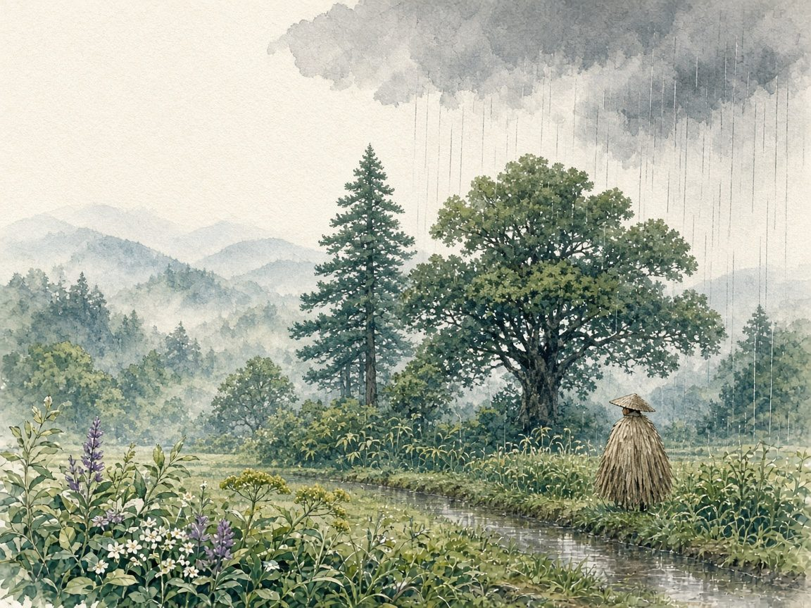

第8回三草二木（さんそうにもく）の譬え
配信日
🔊 読み上げで聴く
出典『妙法蓮華経』薬草喩品第五

今日は、法華経の薬草喩品に説かれる「三草二木の譬え」をご紹介します。大きな雲が空いっぱいに広がり、ひとしく雨を降らせます。山や谷に生える小さな草も、中くらいの草も、大きな草も、そして小さな木も大きな木も、みな同じ雨に潤されます。お釈迦さまは、こう説かれました。
「一雲の雨らす所、其の種性に称うて生長することを得て、華菓敷け実る。一地の所生、一雨の所潤なりと雖も、而も諸の草木各差別あり」 出典 『妙法蓮華経』薬草喩品第五（一雲所雨 称其種性 而得生長 華菓敷実 雖一地所生 一雨所潤 而諸草木 各有差別）
雨は、草だから少なく、木だから多くと分け隔てをしません。違って見えるのは、受け取る側の大きさや性質がそれぞれだからです。仏さまの教えも同じで、すべての人にひとしく注がれ、一人ひとりがその人らしい花を咲かせ、実を結んでいきます。小さな草が大木をうらやむ必要はありません。同じ雨をいただいて、自分の場所で根を張ればよいのです。私たちにとって、その雨を受け止める器を育てるのが、日々のお題目口唱です。